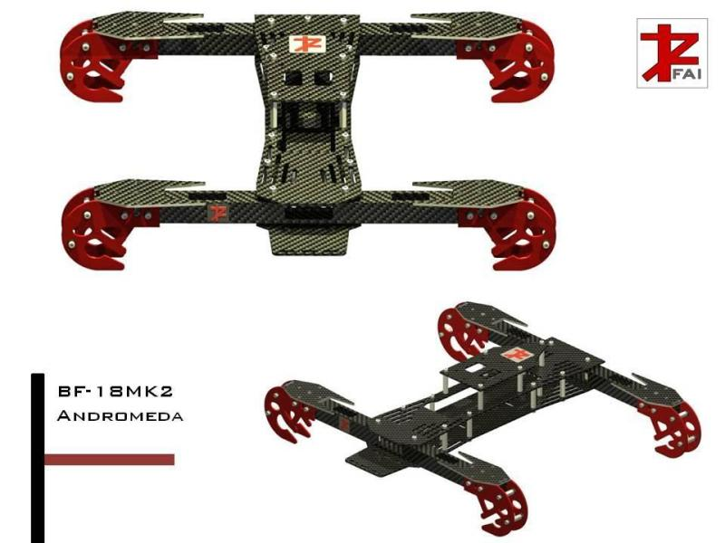
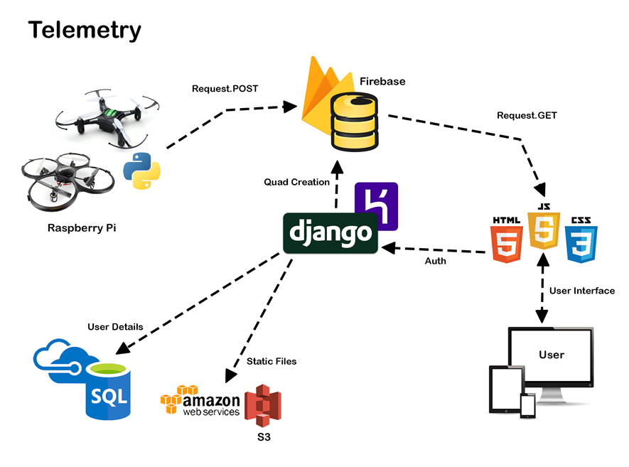
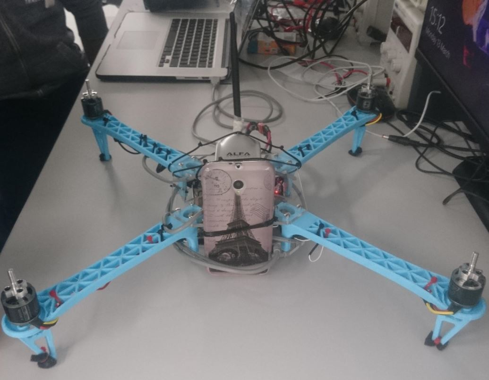
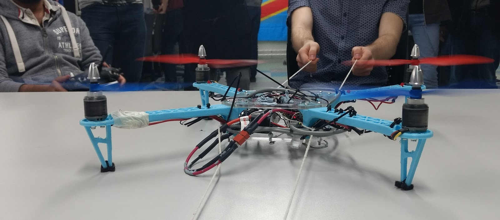

2013) Problem: Design a quadcopter system from scratch for aerial photography.
This project consisted of designing, building and testing a quadcopter, they were an exciting area of engineering at the time.
Three design iterations
Designs
Prototype design
Performance design 1
The frame was too big and the battery placement was off-centre
Design 2 Performance design 2
The smaller frame and centring of the battery solved the problems experienced the first iteration, however, the main body, being made of plastic experienced distortion forces when torque was applied at opposing motors.
To save money I bought 4 brushless motors all with a single thread, this was a mistake (as shown at the end), nylon lock nuts, however, solve this problem.
Final iterationFinal iteration
2016) Problem: Design a quadcopter system from scratch that can deliver packages.
Sub Problem: Develop a real-time telemetry system that leverages recent cloud computing developments for remote quadcopter analysis.
When testing the system from Italy while updating the firebase servers in London it took between 200ms and 300ms to update the data on the front end app.
Probably one of the hardest problems I ever experienced was configuring an old Vodafone (Huawei) 4G dongle to work together with the raspberry pi, it took me 3 days of trial and error, the only available material to configure it, were a few forum posts from 2007. The problem was that the raspberry pi though it was interacting with a USB stick, disabling full communication with the device, editing a configuration file from a remote part of UNIX fixed the problem.
 